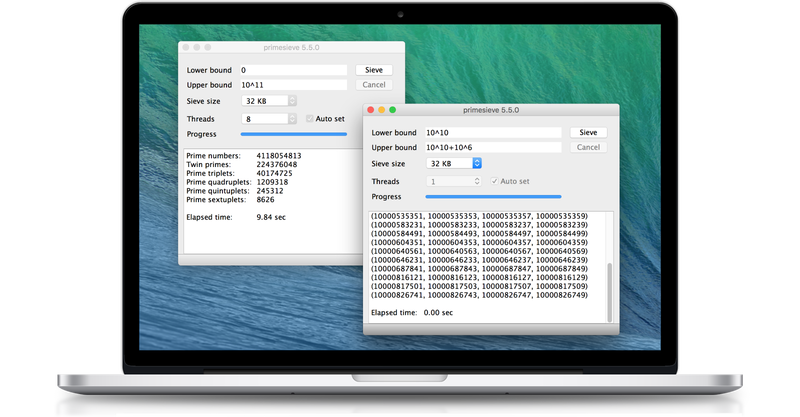

About
primesieve is a free software program and C/C++ library that generates primes using a highly optimized sieve of Eratosthenes implementation. It counts the primes below 10^10 in just 0.45 seconds on an Intel Core i7-6700 CPU (4 x 3.4GHz). primesieve can generate primes and prime k‑tuplets up to 2^64.
Speed comparison
primesieve generates primes about 50 times faster (single-threaded) than an ordinary C/C++ sieve of Eratosthenes implementation and about 10,000 times faster than trial-division. primesieve outperforms the author's older ecprime (fastest open source prime number generator from 2002 to 2010) by about 30 percent and also substantially outperforms primegen the fastest sieve of Atkin implementation on the web. Here is a historical list of fast prime sieve implementations.
Timings
| x | Prime Count |
Intel Core i7-6700 (4 x 3.4GHz, 256 KB L2 cache) |
AMD Ryzen 7 1700 (8 x 3.0GHz, 512 KB L2 cache) |
IBM POWER8 (22 x 3.0GHz, 512 KB L2 cache) |
| 108 | 5,761,455 | 0.01s | 0.01s | 0.01s |
| 109 | 50,847,534 | 0.04s | 0.03s | 0.07s |
| 232 | 203,280,221 | 0.18s | 0.11s | 0.15s |
| 1010 | 455,052,511 | 0.44s | 0.27s | 0.24s |
| 1011 | 4,118,054,813 | 5.06s | 3.00s | 1.72s |
| 1012 | 37,607,912,018 | 61.03s | 35.20s | 19.34s |
| 1013 | 346,065,536,839 | 753.21s | 413.91s | 225.92s |
The above benchmarks were run on Linux, for each
benchmark primesieve used all available CPU cores and the sieve
size was set to the CPU's L2 cache size.
CPU scaling

primesieve scales linearly up to a very large number of CPU cores (if the interval is sufficiently large). The above benchmark was run on a system with 8 physical CPU cores, at each start offset the primes inside an interval of size 10^11 were counted using different numbers of threads.
Installing primesieve
The primesieve console application can be installed using your operating system's package manager. You can also download the primesieve console and GUI applications from https://primesieve.org/downloads.
# Debian/Ubuntu sudo apt install primesieve # macOS brew install primesieve # Windows using Chocolatey package manager choco install primesieve
Usage examples
The primesieve console application can generate primes and prime k-tuplets (twin primes, prime triplets, prime quadruplets, prime quintuplets, prime sextuplets) and find the nth prime.
# Count the primes below 1e10 using all CPU cores primesieve 1e10 # Print the primes below 1000000 primesieve 1000000 --print # Count the primes within [1e10, 2e10] using 4 threads primesieve 1e10 2e10 --threads=4 # Print an option summary primesieve --help
Algorithms
primesieve generates primes using the segmented
sieve of
Eratosthenes with
wheel
factorization, this algorithm has a complexity of
 operations and uses
operations and uses
 space.
space.
Segmentation is currently the best known practical improvement to
the sieve of Eratosthenes. Instead of sieving the interval
[2, n] at once one subdivides the sieve interval into a
number of equal sized segments that are then sieved consecutively.
Segmentation drops the memory requirement of the sieve of Eratosthenes from
 to
.
The segment size is usually chosen to fit into the CPU's fast L1 or L2
cache memory which significantly speeds up sieving. A segmented
version of the sieve of Eratosthenes was first published by Singleton
in 1969 [1]. Here is a
simple implementation of the segmented
sieve of Eratosthenes.
to
.
The segment size is usually chosen to fit into the CPU's fast L1 or L2
cache memory which significantly speeds up sieving. A segmented
version of the sieve of Eratosthenes was first published by Singleton
in 1969 [1]. Here is a
simple implementation of the segmented
sieve of Eratosthenes.
Wheel factorization is used to skip multiples of small primes. If a
k-th wheel is added to the sieve of Eratosthenes then only those
multiples are crossed off that are coprime to the first k
primes, i.e. multiples that are divisible by any of the first k
primes are skipped. The 1st wheel considers only odd numbers, the 2nd
wheel (modulo 6) skips multiples of 2 and 3, the 3rd wheel (modulo 30)
skips multiples of 2, 3, 5 and so on. Pritchard has shown in
[2] that the running time of the sieve of
Eratosthenes can be reduced by a factor of
 if the wheel size is
if the wheel size is
 but for cache reasons the sieve of Eratosthenes usually performs best
with a modulo 30 or 210 wheel. Sorenson explains wheels in
[3].
but for cache reasons the sieve of Eratosthenes usually performs best
with a modulo 30 or 210 wheel. Sorenson explains wheels in
[3].
Additionally primesieve uses Tomás Oliveira e Silva's
cache-friendly bucket list algorithm
if needed [4]. This algorithm is relatively
new, it has been devised by Tomás Oliveira e Silva in 2001 in order to
speed up the segmented sieve of Eratosthenes for prime numbers past 32
bits. The idea is to store the sieving primes into lists of buckets
with each list being associated with a segment. A list of sieving
primes related to a specific segment contains only those primes that
have multiple occurrence(s) in that segment. Whilst sieving a segment
only the primes of the related list are used for sieving and each
prime is reassigned to the list responsible for its next multiple when
processed. The benefit of this approach is that it is now possible to
use segments (i.e. sieve arrays) smaller than
 without deteriorating efficiency, this is important as only small
segments that fit into the CPU's L1 or L2 cache provide fast memory
access.
without deteriorating efficiency, this is important as only small
segments that fit into the CPU's L1 or L2 cache provide fast memory
access.
Implementation
primesieve is written entirely in C++ and does not depend on external libraries. It's speed is mainly due to the segmentation of the sieve of Eratosthenes which prevents cache misses when crossing off multiples in the sieve array and the use of a bit array instead of a boolean sieve array. primesieve reuses and improves ideas from other great sieve of Eratosthenes implementations, namely Achim Flammenkamp's prime_sieve.c, Tomás Oliveira e Silva's A1 implementation and the author's older ecprime all written in the late '90s and '00s. Furthermore primesieve contains new optimizations to increase instruction-level parallelism and more efficiently uses the larger number of registers in today's CPUs.
Optimizations used in primesieve
- Uses a bit array with 8 flags each 30 numbers for sieving
- Pre-sieves multiples of small primes ≤ 19
- Compresses the sieving primes in order to improve cache efficiency [5]
- Starts crossing off multiples at the square
- Uses a modulo 210 wheel that skips multiples of 2, 3, 5 and 7
- Uses specialized algorithms for small, medium and big sieving primes
- Uses a custom memory pool (for big sieving primes)
- Processes multiple sieving primes per loop iteration to increase instruction-level parallelism
- Multi-threaded using C++11 std::async
Highly optimized inner loop
primesieve's inner sieving loop has been optimized using extreme loop unrolling, on average crossing off a multiple uses just 1.375 instructions on x64 CPUs. Below is the assembly GCC generates for primesieve's inner sieving loop, each andb instruction unsets a bit (crosses off a multiple) in the sieve array.
This README.md file contains more technical implementation details.
C/C++ library
Below is a C++ example that shows how to iterate over primes using libprimesieve.
libprimesieve natively supports C and C++. For generating an array of primes and iterating over the primes < 2^64 libprimesieve is easily the fastest library on the web!
Bindings for other languages
primesieve natively supports C and C++ and has bindings available for:
| Python: | primesieve-python |
| Perl: | perl6-primesieve |
| Ruby: | primesieve-ruby |
| Rust: | primesieve.rs |
| Haskell: | primesieve-haskell |
Many thanks to the developers of these bindings!
References and notes
- R. C. Singleton, "An efficient prime number generator", Communications of the ACM 12, 563-564, 1969.
- Paul Pritchard, "Fast compact prime number sieves (among others)", Journal of Algorithms 4 (1983), 332-344.
- Jonathan Sorenson, "An analysis of two prime number sieves", Computer Science Technical Report Vol. 1028, 1991.
- Tomás Oliveira e Silva, "Fast implementation of the segmented sieve of Eratosthenes", 2002.
- Actually not the sieving primes are compressed but their sieve and wheel indexes.